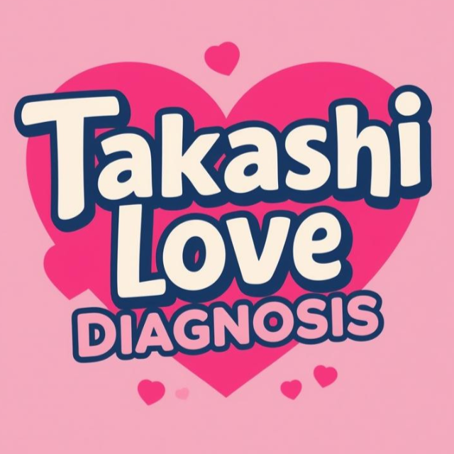

① 好きな人ができたとき、あなたは？ 相手から来るのを待つ 様子を見ながら距離を縮める すぐにアプローチする
② 恋人が落ち込んでいたら？ そっと寄り添う 相手が話してくるまで待つ すぐに話を聞いて励ます
③ デートに誘うのは？ 相手に任せる タイミングが合えば誘う 自分から誘う
④ 恋愛で一番大切だと思うものは？ 安心していられる関係 お互いの信頼 楽しさやドキドキ
⑤ 好きな人が他の異性と話していたら？ かなり気になる 少し気になる あまり気にしない
⑥ 告白するなら？ 雰囲気を見て決める 自分からする 相手からしてほしい
⑦ 恋人とはどのくらい会いたい？ 週1〜2回 できるだけ毎日 月に数回
⑧ 恋愛で不安になることは？ よくある 時々ある ほとんどない
⑨ 恋人に対してあなたは？ 甘えたい お互い支え合いたい 相手をリードしたい
⑩ 理想の恋愛は？ 穏やかな恋愛 お互い成長できる恋愛 刺激的な恋愛
⑪ 恋人と喧嘩したら？ すぐ仲直りしたい 少し時間を置く 自然に解決するのを待つ
⑫ 好きな人にはどんな態度になる？ 積極的に話しかける あまり話せない 普通に接する
⑬ 恋人との連絡頻度は？ 毎日 数日に1回 必要なときだけ
⑭ デートの計画は？ 一緒に考える 相手に任せる 自分で考える
⑮ 恋人の友達関係は？ 気にしない 少し気になる かなり気になる
⑯ 恋人と将来の話は？ あまりしない 時々する よくする
⑰ 恋人と意見が違ったら？ 相手に合わせる しばらく様子を見る 話し合って解決する
⑱ 恋人への愛情表現は？ 積極的 普通 控えめ
⑲ 恋愛の優先度は？ 高い 普通 低い
⑳ 理想の恋人関係は？ 穏やか バランス型 情熱的